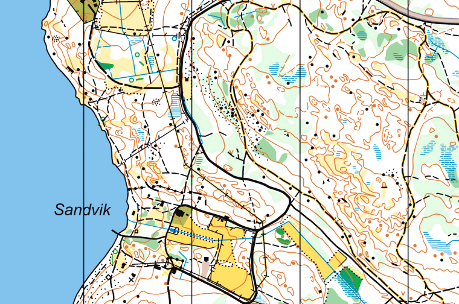

خريطة التوجيه
عند التدريب على قراءة الخريطة، يمكن أن تكون خريطة التوجيه مفيدة جدًا. فهي تصوير دقيق للغاية للتضاريس وأكثر تفصيلاً من العديد من الخرائط الأخرى. تظهر خريطة التوجيه تفاصيل مثل المسارات، والصخور، والجداول، والفروق في الارتفاع. غالبًا ما تحتوي خرائط التوجيه على نقاط تفتيش. كل نقطة تفتيش يتم تمييزها بدائرة بنفسجية، ويوجد التفتيش في وسط الدائرة. تُوضع نقاط التفتيش كمؤشرات للأماكن التي يجب الوصول إليها على الخريطة.
